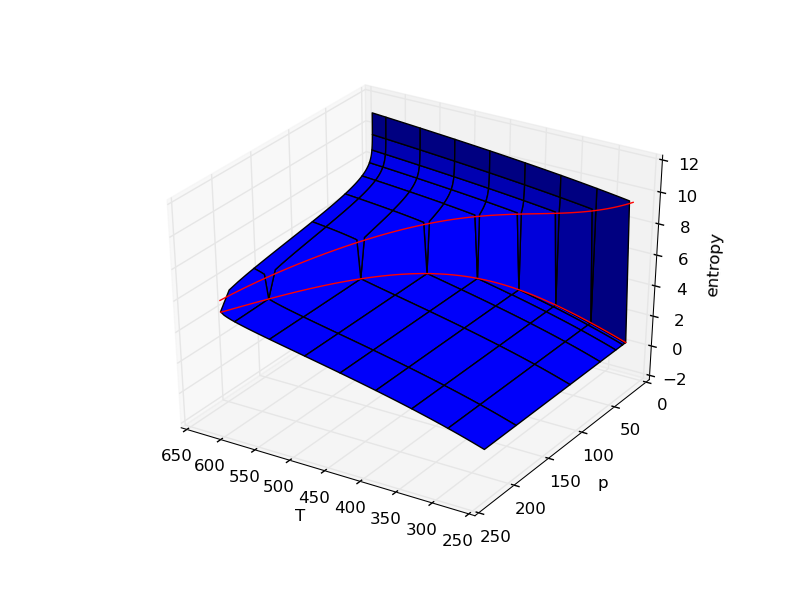
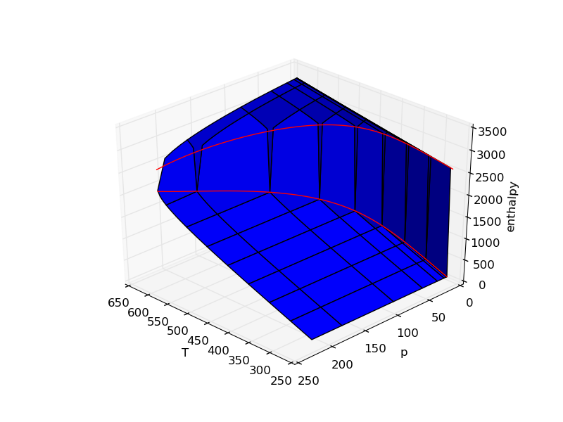

Examples
Phase Changes in Steam
Numpy compatibility makes it possible to quickly generate beautiful visualizations of thermodynamic properties with matplotlib.
Source



Brayton Cycle Analysis
Jet engines and gas turbines are implementations of the Brayton cycle. PYro's psolve() makes it easy to automate cycle analysis.
Source

Rankine Cycle Analysis
What could be a more classic example of the power of thermodynamics than a steam engine? Today, the Rankine cycle is still essential to nuclear, coal plants, and integrated gas turbine combined cycle power plants. This example uses a boiler and superheater to bring the turbine outlet to saturated conditions.
Source